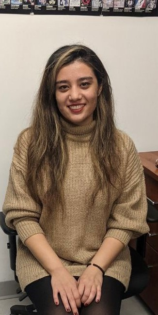

More about me

M.Sc. in Process Systems Engineering, 2020-present
University of Waterloo, Canada
B.Sc. in Chemical Engineering, 2019
Sharif University of Technology, Iran
Teaching Assistant, University of Waterloo (Sep 2021-Present)
Serve as a teaching assistant for Aspen Plus lab to a group of 75 undergraduate students
Research Intern, The Research Center of New Technologies in Life Science Engineering (Jun 2019 – Aug 2019)
Cell culture and working with nanoliposome producer, millibioreactor and electrospinning machine
Engineer Intern, Sinadarou Labs Company (Jun 2018 – Sep 2018)
Different production lines (such as lines of drops and monodose drugs) and wastewater treatment section
Interests
- Mathematical modeling
- Process control
- Process optimization
- Data analysis
- Kamali, S.; Abdi Kordlar, H.; Saadatmand, M.; Mashayekhan, Sh. Simulation of Momentum and Mass Transport in a 3D Porous Scaffold Iranian Journal of Biomedical Engineering, v. 14, p. 43, 2020.
http://www.ijbme.org/article_38183_en.html